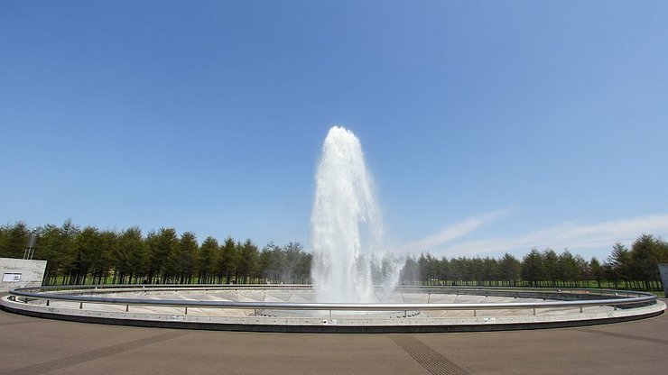
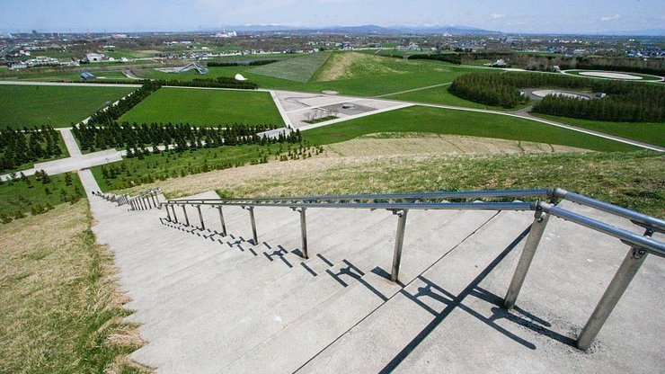

Moerenuma Park
モエレ沼公園
Moerenuma Park (モエレ沼公園, Moerenuma Kōen) is a large park in the outskirts of Sapporo. Surrounded by a marsh, the park has a circumference of about four kilometers. The grounds are covered in attractive green space and there are massive, dramatic features that make the park a very unique public space.
The park owes its bold design to the renowned Japanese American sculptor Isamu Noguchi. Born in the United States, Noguchi spent a considerable part of his professional life in Japan and maintained a workshop in Takamatsu. In 1988 the city of Sapporo entrusted Noguchi with the creation of a park on the spacious grounds of a landfill. Shortly after the plans were completed, Noguchi passed away, but his designs were carried out and the park was opened to the public in 2005.
The park is filled with impressive man made features that give visitors a unique experience as they explore them. Mount Moere, built for the park, is 62 meters tall and offers great views of the park and the surrounding area. At 30 meters, Play Mountain is smaller but has an interesting path that leads gently up to the mountain's peak. A pyramid building made of glass called Hidamari has an information center, an atrium, basic facilities and gallery space dedicated to Noguchi.
In the park's easternmost forest area there are creative playground areas designed for kids. A Sea Fountain in the middle of the park shoots water 25 meters into the air during daily shows from late April to mid October (3-4 shows per day, shows last either 15 or 40 minutes). And an artificial bathing area called Moere Beach is open to the public from mid June to early September (10:00 to 16:00, closed on Thursdays). Rental bicycles are available from late April to early November from 200 yen for 2 hours.
